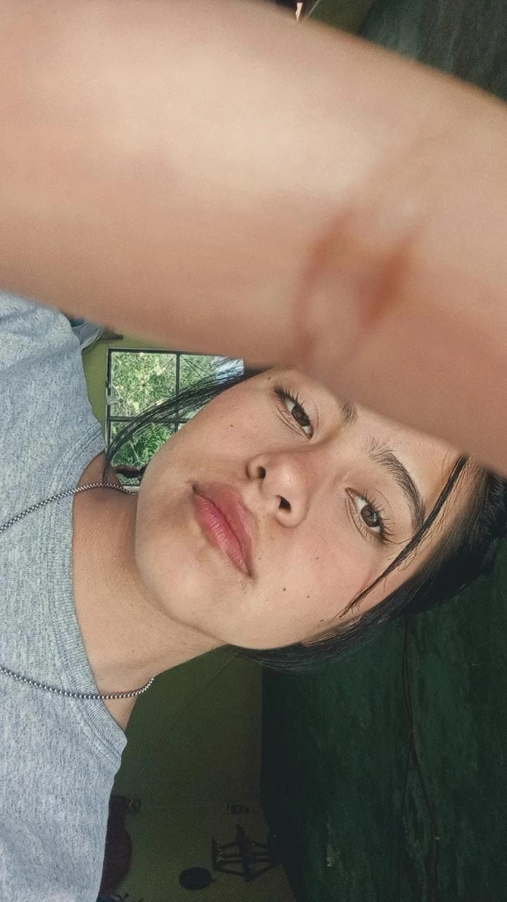
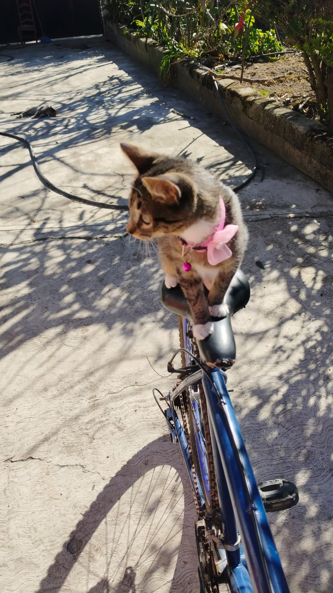
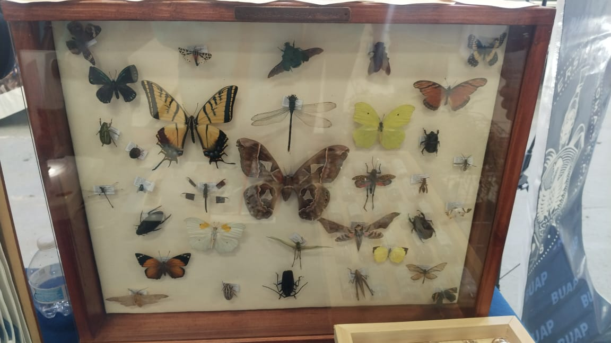
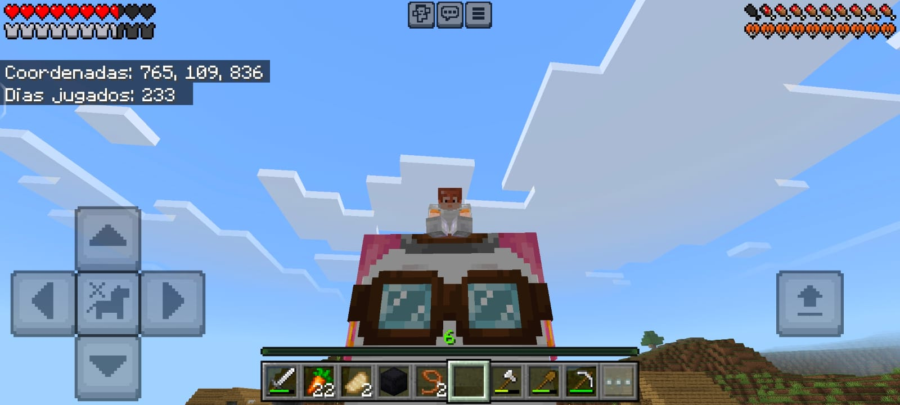
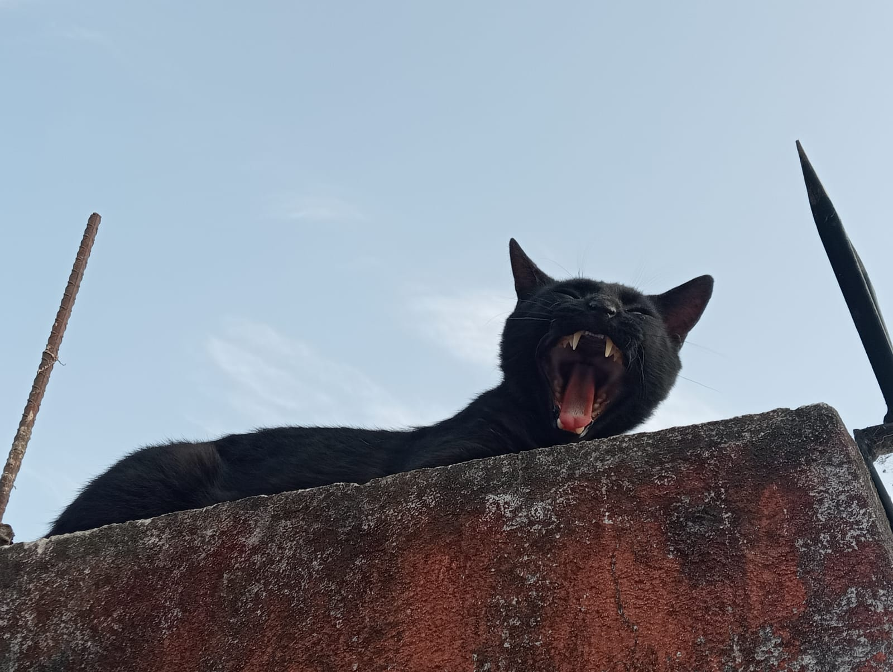
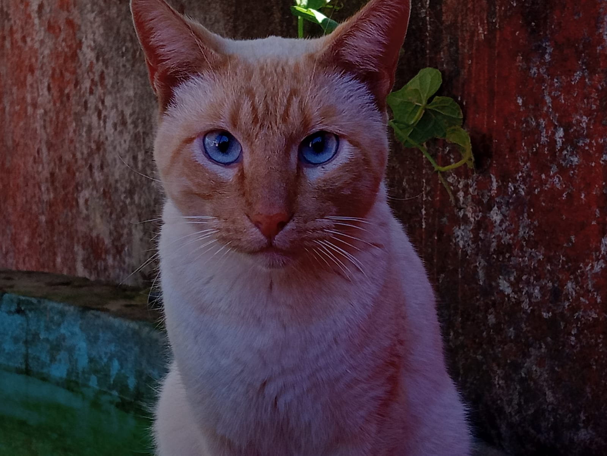
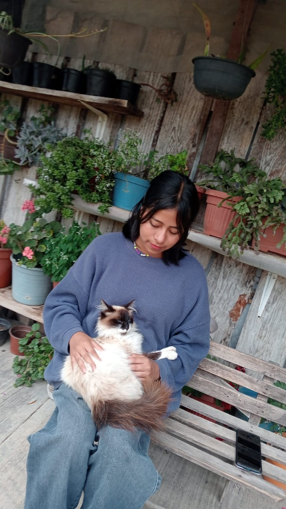
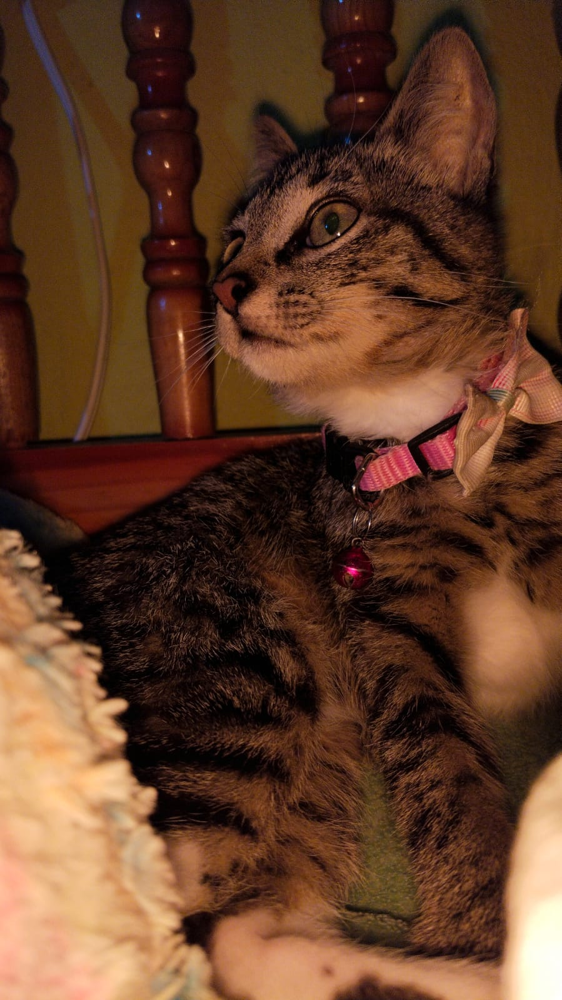

Edad: 18 años
Ciudad: Tetela de Ocampo
Soy Zayda Posadas De La Luz y soy estudiante del Cobaep Plantel 29. Me gustan mucho las plantas y los animales. Tengo una familia de 7 integrantes a los cuales siempre he apreciado mucho. Tambien me gusta mucho el color verde y jugar minecraft.
Me gusta pintar, dibujar, hacer manualidades, andar en bici y caminar.
Aquí puedes ver algunas imagenes de lo q mas me agrada:






